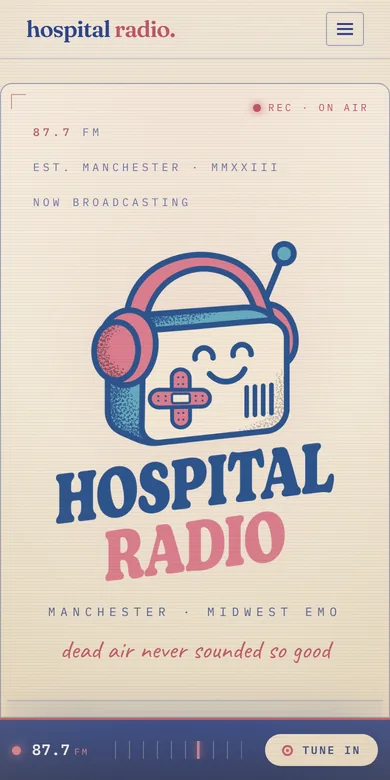

← Kyle
hospital
radio.
87.7 FM ♡
Midwest emo, Manchester.
Tune in
Code

Every gig, with its setlist
Lyrics and a press kit
A tuning dial for a menu
What
Website · band
My part
Design & build
Built with
Astro
Text-file content
Next
Hearthworks